Qué hacer en San Borja
Hoy tenemos 14 eventos y 20 restaurantes, cafés y bares en San Borja, con precio por persona y para dos. La lista se actualiza todos los días.
Actualizado el martes 17 de noviembre de 2026. Precios referenciales.
Filtrar por presupuesto y zona en Plancito →
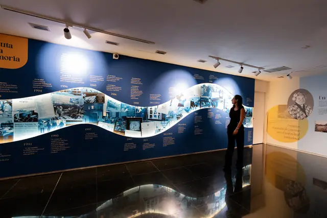
Ver y comprar →Biblioteca Nacional Del Perú
Gratis
 Ver y comprar →
Ver y comprar →Caral: Vida En Armonía Con La Naturaleza Megadiversa
Gratis
 Ver y comprar →
Ver y comprar →Hogar
Gratis
 Ver y comprar →
Ver y comprar →Soniemfest 2026 - Tercera edición
Gratis
- Ver y comprar →
Xiv Salón Internacional De Arte Con Derechos
Gratis
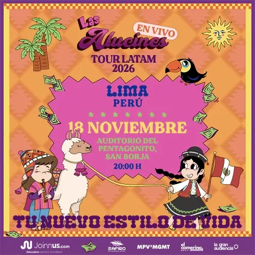
Ver y comprar →LAS ALUCINES TOUR LATAM 2026
S/ 311.06 para dos (S/ 155.53 por persona)
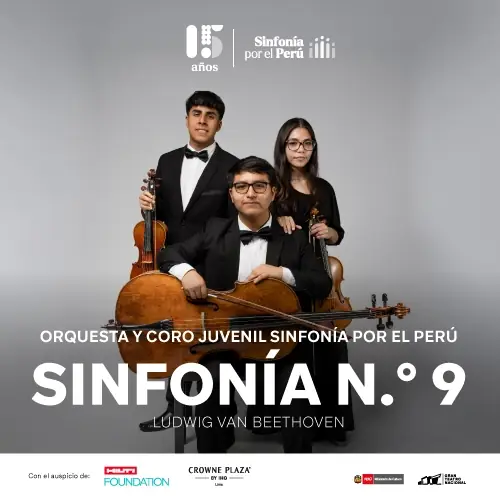
Ver y comprar →SINFONÍA NRO 9 – LUDWIG VAN BEETHOVEN
S/ 50 para dos (S/ 25 por persona)
 Ver y comprar →
Ver y comprar →Concierto de aniversario: 23 años
S/ 15 para dos (S/ 7.50 por persona)
 Ver y comprar →
Ver y comprar →Sonido Y Experimentación
Gratis
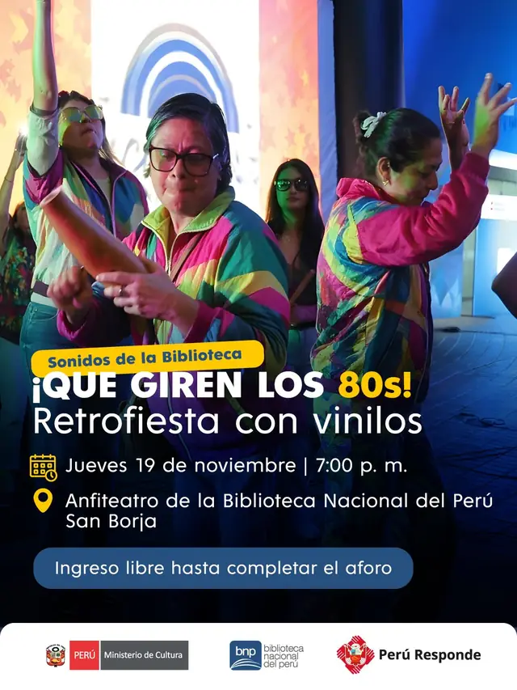
Ver y comprar →¡Que Giren Los 80S!
Gratis
 Ver y comprar →
Ver y comprar →Paddington
Gratis
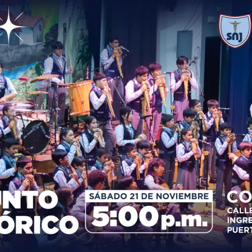
Ver y comprar →Gala del Conjunto Folclórico
S/ 48 para dos (S/ 24 por persona)
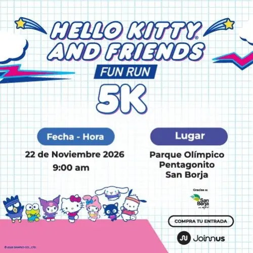
Ver y comprar →Carrera Hello Kitty and Friends 5K
S/ 120 para dos (S/ 60 por persona)
 Ver y comprar →
Ver y comprar →El Cuy Y El Zorro
Gratis
 Ver ubicación →
Ver ubicación →PETITE | The Pastry & Co - San Borja
S/ 50 para dos (S/ 25 por persona)
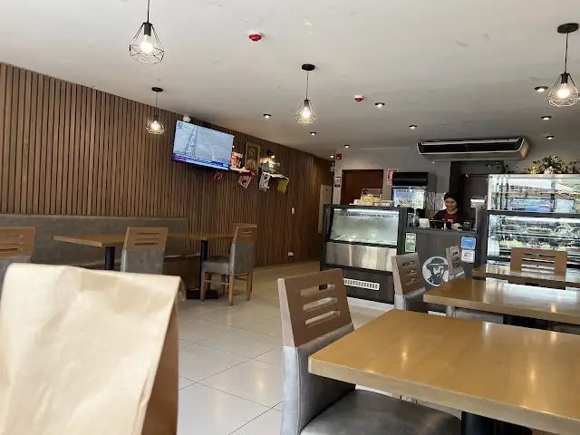
Ver ubicación →Curcucho Cafe
S/ 60 para dos (S/ 30 por persona)
 Ver ubicación →
Ver ubicación →Restaurante SanMar Familia y amigos
S/ 140 para dos (S/ 70 por persona)
 Ver ubicación →
Ver ubicación →Juicy Lucy - La Rambla
S/ 60 para dos (S/ 30 por persona)
 Ver ubicación →
Ver ubicación →80+ COFFEE & TEA
S/ 60 para dos (S/ 30 por persona)
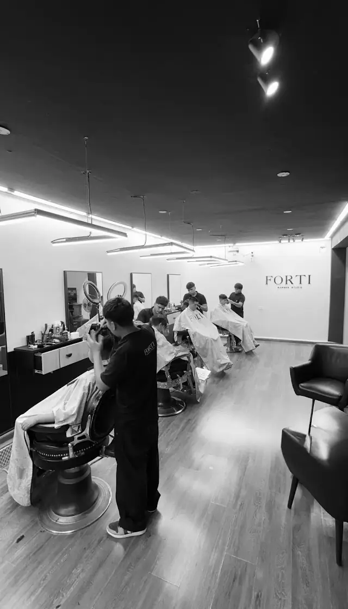
Ver ubicación →FORTI Barber Studio - San Borja
S/ 90 para dos (S/ 45 por persona)
 Ver ubicación →
Ver ubicación →SANMAR Restaurante Peruano & bar
S/ 180 para dos (S/ 90 por persona)
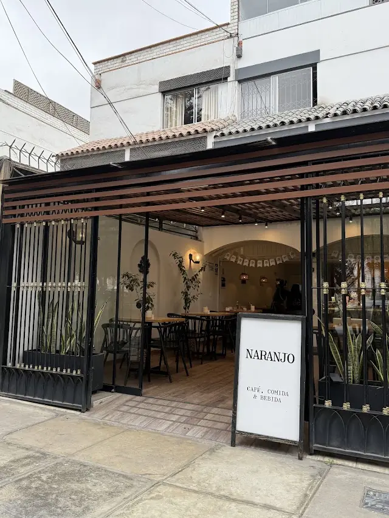
Ver ubicación →NARANJO
S/ 60 para dos (S/ 30 por persona)
 Ver ubicación →
Ver ubicación →La Nacional La Rambla
S/ 160 para dos (S/ 80 por persona)
 Ver ubicación →
Ver ubicación →Sweet 7 - Bubble Tea (Sede: San Borja)
S/ 50 para dos (S/ 25 por persona)
 Ver ubicación →
Ver ubicación →Don Roberto
S/ 60 para dos (S/ 30 por persona)
 Ver ubicación →
Ver ubicación →Naruto Japanese Food
S/ 100 para dos (S/ 50 por persona)
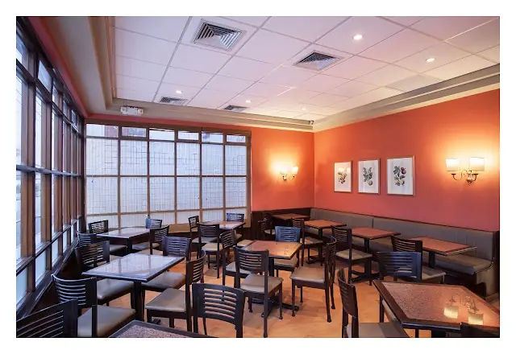
Ver ubicación →Pastelería San Antonio - Chacarilla
S/ 100 para dos (S/ 50 por persona)
 Ver ubicación →
Ver ubicación →Viet Restaurant Vietnamita
S/ 100 para dos (S/ 50 por persona)
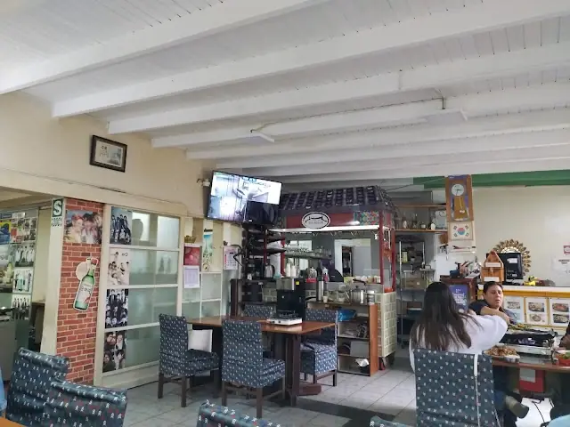
Ver ubicación →Han Kook Kwan
S/ 100 para dos (S/ 50 por persona)
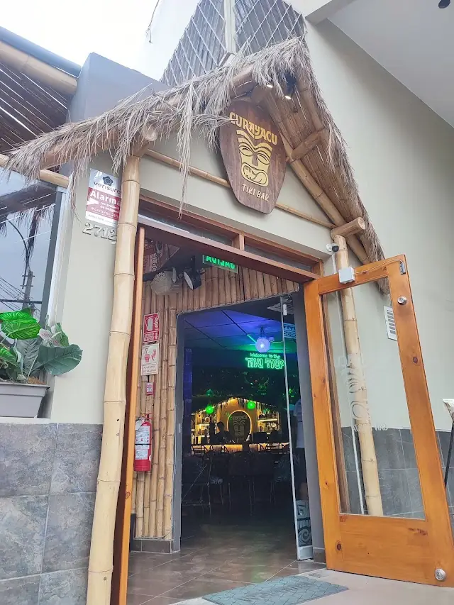
Ver ubicación →Curayacu Tiki Bar - San Borja
S/ 100 para dos (S/ 50 por persona)
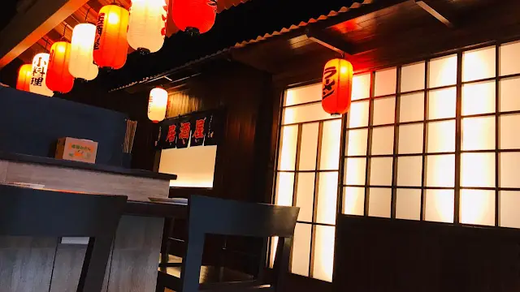
Ver ubicación →REIWA Izakaya San Borja
S/ 140 para dos (S/ 70 por persona)
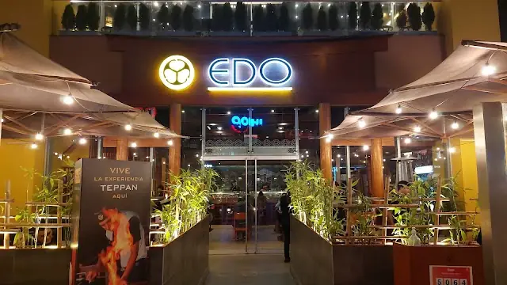
Ver ubicación →Edo
S/ 160 para dos (S/ 80 por persona)
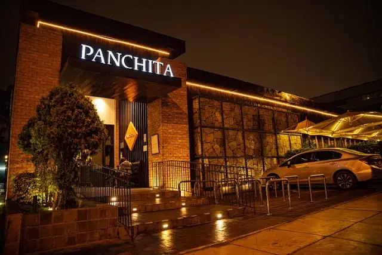
Ver ubicación →Panchita - Chacarilla
S/ 200 para dos (S/ 100 por persona)
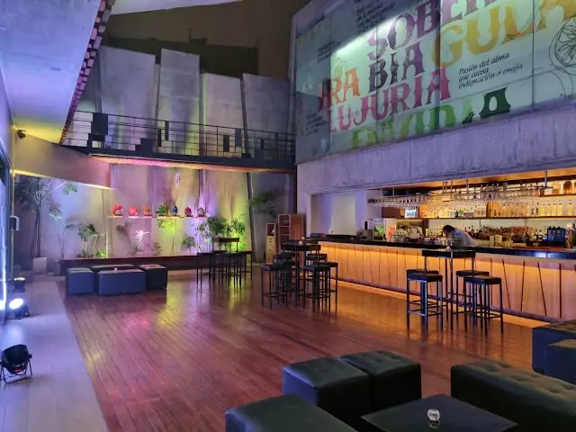
Ver ubicación →Pescados Capitales Chacarilla
S/ 220 para dos (S/ 110 por persona)
Preguntas frecuentes
¿Qué hacer en San Borja gratis?
Ahora hay 9 planes gratis en San Borja. Están marcados como «Gratis» en la lista.
¿Dónde comer rico en San Borja?
Los restaurantes, cafés y bares de esta página tienen 4.5 estrellas o más en Google Maps.